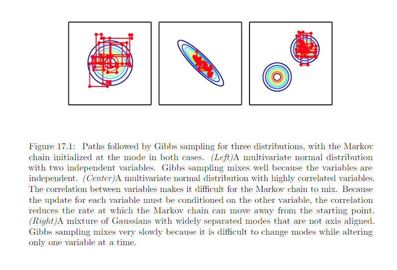

17.5 The challenge of Mixing between Seperated Modes¶
Primary difficulty involved in with Monte Carlo Markov Chain: tendency to mix poorly.
Slow mixing or failure to mix: Especially in high-D cases, MCMC samples become very correlated. Could be seen as inacdertently performing noisy gradient descent on the energy function. The chain tends to take small steps, from configuration \(x^{(i-1)}\) to a configuration \(x^{(i)}\), with the energy \(E(x^{(i)})\) lower or approximately equal to the energy \(E(x^{(i - 1)})\), with preference for moves that yield lower energy configuration.
Once the chain has found a region of low energy, which we call a mode, the chain will tend to walk around that mode. Once in a while it will step out of that mode and generally return to it or move toward another mode. Problem: seccessful escape routes are rare for many interesting distribution.
Consider the probability of going from one mode to a nearby mode within a given number of steps. Determined by shape of the “energy barrier” between those mode. Transition with between two modes are seperated by a high energy barrier (a region of low barrier) are exponetially less likely.
Problem arrises when: there are multiple modes with high probability are seperated by region of low probability, especially when each Gibbs sampling step must update only a small subset of variables whose values are largely determined by the other variables.
Example:
- variable a and b, taking on values -1 and 1
- E(a, b) = -wab for some large positie value of w
The model express a strong belief that a and b habe the same sign. Consider updating b using Gibbs sampling step with a = 1. The conditional distribution over b is given by:
I still don’t understand how the \(\sigma(w)\) get derived.
If w is large
- when a = 1, the probability of b assigned with 1 is close to 1
- when a = -1, the probability of b assigned with -1 is close to -1
According to \(P_{model}(a, b)\), both signs of both variable are equally likely. According to \(P_{model}(a|b)\) This means that Gibbs sampling will only rarely flip the sign of these variables.
In more practical scenarios, we care about making transition between all the many modes that a real model might contain -> greater challenge.
Sometimes this problem could be solved by finding groups of highly dependent units and updating all of them simultaneously in a block. Unfortunately, when the dependencies are complicated, it can be computationally intractable to draw a sample from the group. After all, the problem that the Monte Carlo Markov Chain was originally introduced to solve is this problem of sampling from a large group of variables.
In the context of models with latent variables, we often draw samples of x by alternating between sampling from \(p_{model}(x|h)\) and sampling from :math:’p_{model}(h|x)’.
- From the point of view of mixing rapidly, we would like :math:’p_{model}(h|x)’ to have high entropy.
- From the point of view of learning a useful representation of h, we would like h to encode enough information about x to reconstruct it well, which implies that h and should have high mutual information
These two goals are at odds with each other. We often learn generative that very precisely encode x into h but are not able to mix very well.
17.5.1 Tempering to Mix between Modes¶
- Problem: when a distribution has sharp peaks of high probability surrounded by region of low probability, it is difficult to mix between the different modes of distribution.
- Solution: Several techniques for faster mixing are based on constructing alternative version of the target distribution in which the perks are not as high and surrounding valleys are not as low.
Energy based model:
Energy based models may be augmented with an extra parameter \(\beta\) controlling how sharply peaked the distribution is
\(\beta\) : The recoprocal of the temperature.
- When the temperature falls to zero, and \(\beta\) rises to infinity, the energy based model becomes deterministic
- Wehn the temperature rises to infinity, and \(\beta\) falls to 0, the distribution becomes uniform
Typically, a model is trained to evaluated at \(\beta = 1\), we can also make use of other temperature, particular those where \(\beta < 1\).
Tempering: general strategy of mixing between modes of \(p_1\) rapidly by drawing samples with \(\beta < 1\)
Markov chain based on tempered transitions: temporarily resume sampling from higher-temperature distribution to mix to different modes, then resume sampling from the unit temperature distribution
Parallel tempering: Markov chain simulates many different states in parallel, at different termperature. The highest temperature states mix slowly, which the lowest temperature states, at temperature 1, provide accurate samples from the model. The transition operator includes stochasticelly swapping states between 2 different temperature levels, so that a sufficiently high-probability sample from a high temperature slot can jump into a lower temperature slow
17.5.2 Depth May Help Mixing¶
- Problem: When drawing samples from a latent variable model p(h, x), we have seen that if p(h|x) encodes x too well, the sampling from p(x|h) will not change x very much, and mixing will be poor.
- Solution: one way to solve this problem is to make h a deep representation, encoding x into h in such a way that a Markov chain in the space of h can mix more easily.
Many representation learning algorithms, such as RBM tend to yield a marginal distribution over h that is more uniform and more unimodal than the original data distribution over x.
Training an RBM in that higher-level space allowed Gibbs sampling to mix faster between modes.